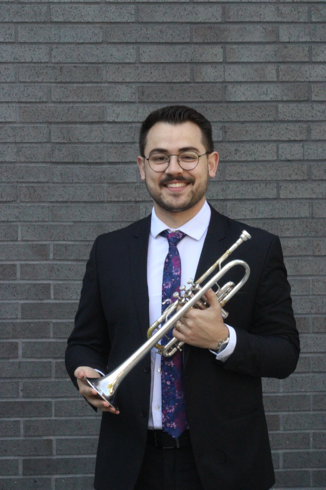

About & Teaching
Trumpet player.
Professor.
Researcher.
A career built across performance, teaching and musical research.

About
From Bauru to stages and universities.
Born in Bauru, Brazil, Victor has built an international career through universities, festivals, orchestras and original projects.
His work connects trumpet performance, teaching and research, with a focus on sound, autonomy and artistic expression.
Free sound.
Conscious practice.
Musical autonomy.
"The goal is for the student to become progressively less dependent on the teacher, ready to teach themselves and follow their own musical path."
Teaching Philosophy
Teaching that builds autonomy.
Lessons are built from each student's goals, combining technique, repertoire, listening and body awareness.
- Consistent air flow and a sound free of tension.
- A routine with technical and lyrical exercises.
- High-level listening references and self-assessment.
- Versatility for today's music field.
Goals
Understand the student's direction or help define it.
Routine
Balance technique, lyricism and repertoire.
Free sound
Develop airflow, comfort and confidence.
Autonomy
Prepare musicians to listen, decide and grow.
Lessons
Want to study with Victor?
Get in touch for lessons, musical guidance or repertoire preparation.